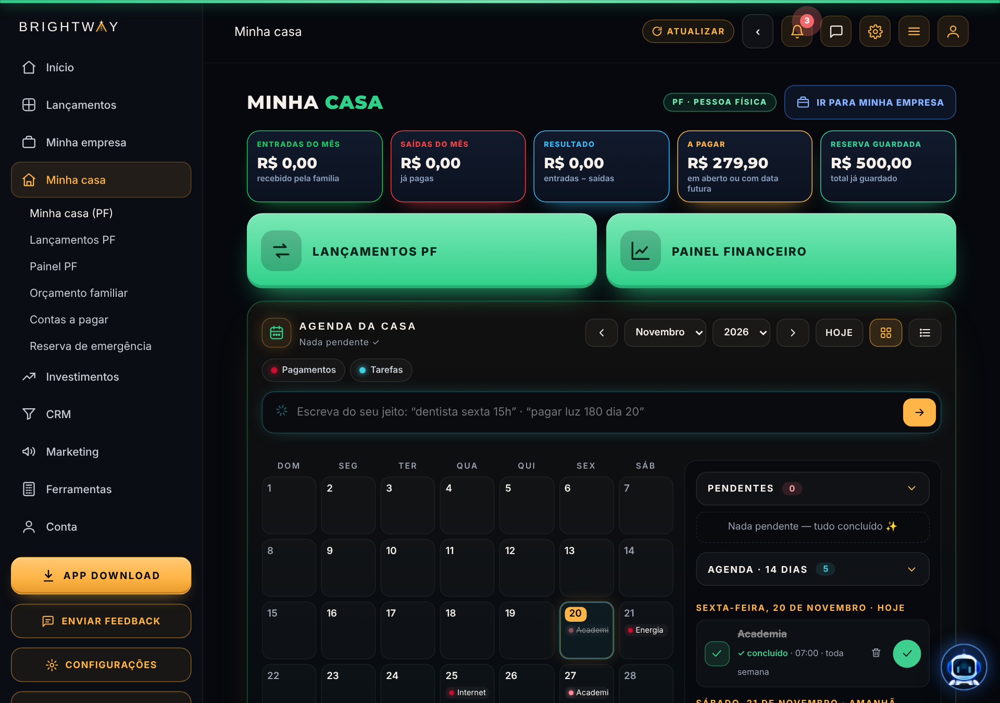

O ecossistema da pessoa física, em verde. Abre pelo Início (tela GESTÃO DE CASA) ou pelo menu. Nada daqui se mistura com a empresa.

GESTÃO DA CASA: orçamento familiar, contas a pagar e reserva de emergência. INVESTIMENTOS: painel de investimentos, câmbio, milhas, metas e recomendações. FERRAMENTAS DA CASA: leitor de contas, PDF e as demais.
O botão IR PARA MINHA EMPRESA, no alto, troca de ambiente.
A tarefa criada na agenda da casa só aparece na casa; a da empresa, só na empresa. O mesmo vale para os lançamentos e para os painéis financeiros.